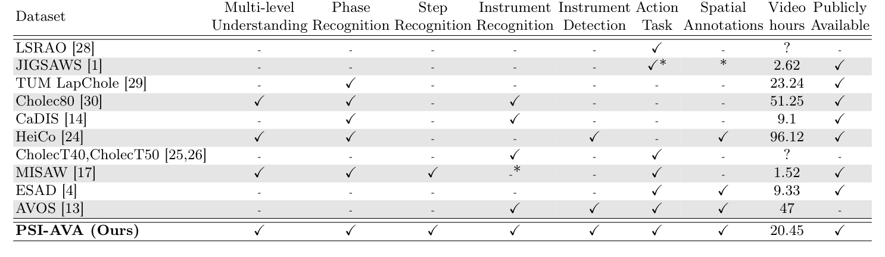
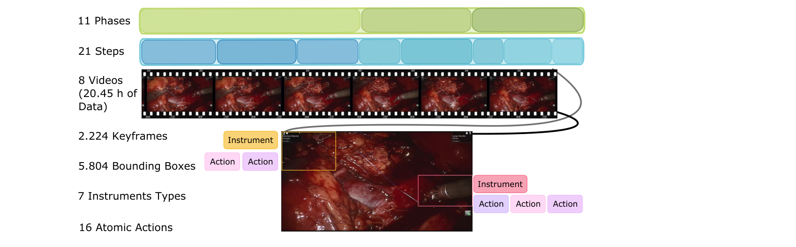
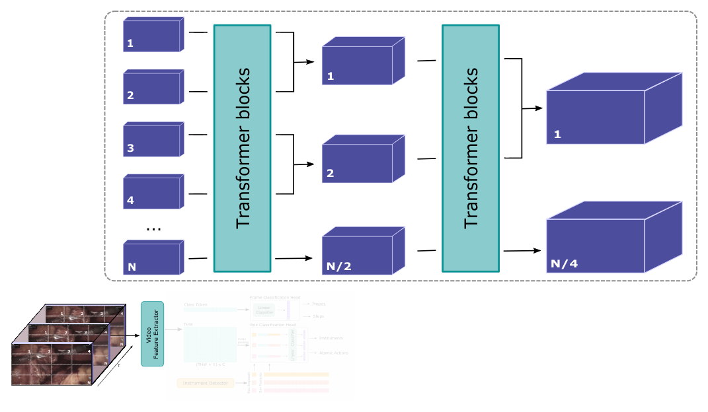
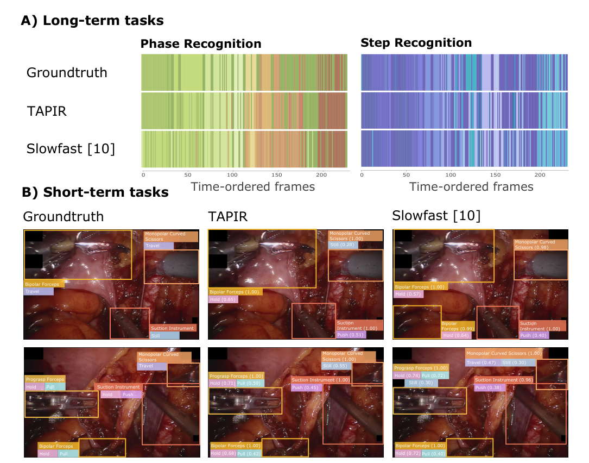
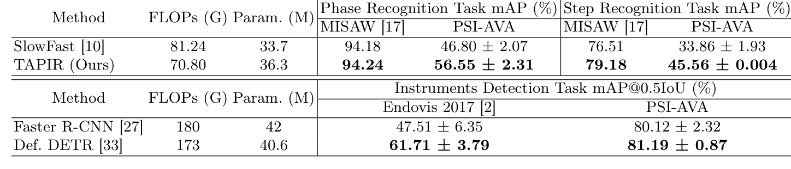

图文解读
1背景与动机
要理解一台手术,模型既要知道“进行到哪一步”,也要知道“每件器械此刻在做什么”。 作者把手术看成器械与解剖结构之间的交互,这些交互嵌套在有目的的活动序列里。术中辅助、手术培训和自主手术机器人都需要这两种时间尺度的信息。
问题是现有数据集几乎都只服务于一项任务。 阶段识别最常见;动作类标签以手势或动词出现,但绑定某一术式;空间标注有框、掩码或运动学数据,却很少和流程标注共存。没有同一批视频上的多层标注,就无法检验长期流程信息能否帮助识别短期动作。

这张表也是下一节的出发点:PSI-AVA 是唯一在每一列都打勾的数据集。
2核心观点速览
论文给出两样东西:一个四层标注的数据集,一个把检测特征接入分类的基线。
| 层次 | 内容 | 规模 | 指标 |
|---|---|---|---|
| 阶段 | 11 类(含空闲) | 73,618 帧,每秒 1 帧 | mAP |
| 步骤 | 20 类(含空闲) | 同上 | mAP |
| 器械检测 | 7 类器械框 | 2238 帧,5804 个实例 | mAP@0.5IoU |
| 原子动作 | 16 类,每框最多 3 个 | 同上 | mAP@0.5IoU |
主要结论和它的边界:
- TAPIR 在阶段、步骤、动作上比 SlowFast 高
9.75、11.7、10.11个点;器械检测三种方法几乎一样。 - 去掉框特征后动作 mAP 从
28.68降到9.69,检测特征是动作识别的关键。 - 长期标注对短期任务的贡献、标注一致性、按术者泛化,论文未说明。
20.45 小时视频,8 台手术,3 位术者原子动作最好 28.68 mAP@0.5IoU3数据怎么来的
规模不大,但四层标注出自同一批视频。 视频来自波哥大 Fundación Santafé de Bogotá 的 8 台根治性前列腺切除术,使用 Da Vinci SI3000。去掉非手术片段和潜在身份信息后约 20.45 小时。

标注分两条线。 阶段和步骤由两位泌尿科专家逐秒标注。器械框先由预训练 Faster R-CNN 生成,再由众包标注者修正;每个框再标注最多 3 个原子动作。短期任务每 35 秒取一帧,为何选 35 秒论文未说明。
图文数字有冲突。 图 1 写 21 个步骤和 2.224 个关键帧,正文写 20 个步骤和 2238 个关键帧候选。原因论文未说明,引用时以正文为准并注明口径。
这些标注是否可靠,决定了后面所有分数的含义,下一节就看这一点。
4标签有多可靠
论文没有报告任何标注一致性指标。 两位专家是分工还是重复标注,论文未说明;众包修正的质控流程和复核比例,论文未说明。
这直接限制了对原子动作低分的解读:28.68 里有多少来自任务本身的歧义,有多少来自标注噪声,无法区分。
类别分布不平衡,最少见的类别对应偶发事件。各类数量只画在补充材料图里,正文未列数值。
5评测协议与基线
两折交叉验证,每折 4 台手术,没有独立测试集。 阶段和步骤用 mAP,器械和动作用 mAP@0.5IoU。阶段 mAP 的具体聚合方式论文未说明,复现时要对照官方代码。

TAPIR 的执行链分四步:
- 以关键帧为中心取 16 帧,MViT 输出类别标记和时空标记。
- 类别标记经线性层输出阶段或步骤。
- Deformable DETR 输出器械框和框特征,置信度阈值
0.75。 - 时空标记均值池化后与框特征拼接,经线性层输出器械类别或原子动作。
对照组有两个:卷积网络组合(Faster R-CNN 加在 CaDIS 上预训练的 SlowFast),以及把 MViT 换成 Video Swin 的 TAPIR-VST。卷积网络组合的预训练数据和训练设置都与 TAPIR 不同,下一节的差距混合了架构和训练两种因素。
6主结果说了什么
| 方法 | 阶段 | 步骤 | 器械 | 原子动作 | 计算量 (G) | 参数 (M) |
|---|---|---|---|---|---|---|
| SlowFast | 46.80 | 33.86 | 80.29 | 18.57 | 81.24 | 33.7 |
| TAPIR-VST | 51.63 | 41.00 | 81.14 | 22.49 | 65.76 | 87.7 |
| TAPIR | 56.55 | 45.56 | 80.85 | 28.68 | 70.80 | 36.3 |
阶段、步骤和动作有区分度,器械检测几乎没有。 三种方法的器械检测都在 80 分出头,TAPIR-VST 还略高于 TAPIR。作者说 TAPIR 计算成本更低,按表中数字只在参数量上成立,计算量反而高于 TAPIR-VST。
步骤标准差 0.004 比其他项小两到三个数量级,原因论文未说明。

定性图只有两帧示例,不能当作统计结论。主结果说明基准有难度梯度,接下来作者要证明这个基准本身是合理的。
7基准验证与框特征消融

作者用“排序一致”验证基准。 两类方法在其他数据集和 PSI-AVA 上胜负方向一致。MISAW 上阶段识别已在 94 分以上,两者只差 0.06 个点;PSI-AVA 上差距接近 10 个点,区分度更高。
框特征消融是“多层互补”的主要证据。
| 分类头中的框特征 | 器械检测 | 原子动作 |
|---|---|---|
| 无 | 13.96 | 9.69 |
| Faster R-CNN | 80.40 | 21.18 |
| Deformable DETR | 80.85 | 28.68 |
换成更强的检测器,器械检测只多 0.45 个点,动作却多 7.5 个点。这支持“检测器质量决定动作识别上限”。表 3 与表 2、表 4 的检测数也对不上(81.19 对 80.85),口径论文未说明。
8结果没有证明什么
- 长期标注对短期任务的帮助没有被单独测量。 无框特征时所有框共享同一份全局特征,下降只说明框级分类需要框级外观。要分开,需要比较不同初始化或做多任务联合训练,论文没有做。
- 排序一致的证据很弱。 只比较了两个方法族,更强的模型在哪里都更强,排序一致几乎必然。
- 架构优势没有和训练设置分开。 SlowFast 与 TAPIR 预训练数据、轮数和学习率都不同。
- 泛化能力未知。 单中心、单一机器人系统、3 位术者,按术者划分的实验论文未说明。
9和其他数据集的关系
| 数据集 | 差异 |
|---|---|
| HeiCo | 也是多层,但没有步骤和动作;PSI-AVA 补上中间尺度 |
| MISAW | 有阶段、步骤和动作,针对显微吻合手术,阶段识别已近饱和 |
| CholecT50 | 三元组绑定胆囊切除术;PSI-AVA 的动作不依赖被作用对象 |
| JIGSAWS | 手势与运动学,无阶段和器械检测 |
PSI-AVA 的独特之处是在真实机器人手术上把四个时间尺度放进同一套划分。
10复现要注意什么
- 短期任务的 MViT 用步骤识别训练好的权重初始化,不是直接用 Kinetics-400。
- 原子动作用二元交叉熵,学习率
0.125;其余任务用交叉熵,学习率0.0125。 - 检测框置信度阈值
0.75,会影响器械与动作 mAP。 - 引用数据规模时注明正文与图 1 的差异。